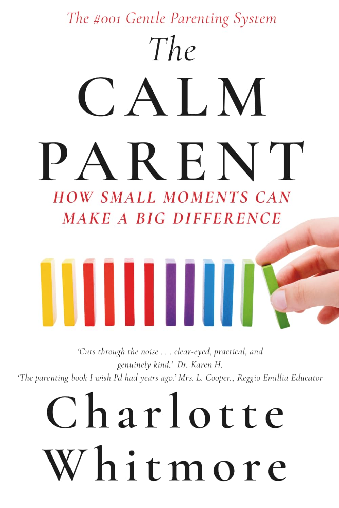

Gentle books for growing minds
Real photographs, calm language, and Montessori-aligned stories for toddlers, plus the parenting research and systems for the adults raising them.
From the Journal
Read the blog →This Season's Shelf
Reader favouritesThe Full Catalogue
Parenting Books
For the grown-ups
Nine societies, eight childhood conditions for raising capable, resilient kids, distilled into home frameworks and exact scripts.

An 8-week system to stop yelling, end screen battles, and raise confident kids, with exact scripts for ten common triggers.

The French parenting scripts that work when your words run out, built on sentences instead of philosophy.

The evidence-based newborn and first year survival guide: sleep, breastfeeding, feeding, and postpartum sanity without the guilt.
What Parents Ask
What are the best Montessori books for toddlers about emotions?
The Little Heart, Big Feelings series is designed for toddlers aged 1 to 4 learning to name and manage big emotions. Titles include Gentle Hands for Toddlers, When My Brain Feels Too Busy, Before I Hit, I Can Be Kind, and Why We Say Sorry. Each uses calm, respectful language to help children and caregivers build a shared emotional vocabulary without shame.
What Montessori books help toddlers with transitions and new experiences?
The Transitions With Me series prepares toddlers for real-life milestones before they happen: My First Day of Preschool, My First Haircut, My First Plane Ride, Sleep in My Own Bed, and Say Bye to Your Pacifier. Each gives children a calm, honest preview that reduces anxiety by making the unfamiliar familiar first.
What books help toddlers with hitting, biting, and losing control?
Before I Hit, Gentle Hands for Toddlers, and Mom and Dad, I Love You. I am still Learning to Control My Hands address the moment before physical behaviour escalates. The Whole Brain Toddler series extends this with Why My Brain Worries, When My Brain Feels Too Busy, and I Can Feel Brave in the Dark.
What books support gentle parenting and positive discipline at home?
BoonHouse books support gentle parenting from both sides. Little Heart, Big Feelings and Transitions With Me give children language that reduces conflict before it starts. The Calm Parent by Charlotte Whitmore gives parents the adult toolkit: the Two-Breath Reset, the Ten-Minute Repair, and Boundary Plus Choice scripts.
What is the best parenting book for stopping yelling and managing screen time?
The Calm Parent by Charlotte Whitmore is a 15-chapter, 8-week gentle parenting system. It covers the four root causes of yelling, exact scripts for ten common triggers including screen meltdowns and bedtime battles, and a week-by-week implementation guide. ISBN 9798181397743.
What parenting book is based on global education research and high-performing countries?
The Capable Child by Tom Reed examines Finland, Japan, Israel, Estonia, the Netherlands, Denmark, Norway, Singapore, and Switzerland, nine societies that independently arrived at the same eight childhood conditions. Practical age-calibrated frameworks and exact scripts, no forest school or lifestyle overhaul required.